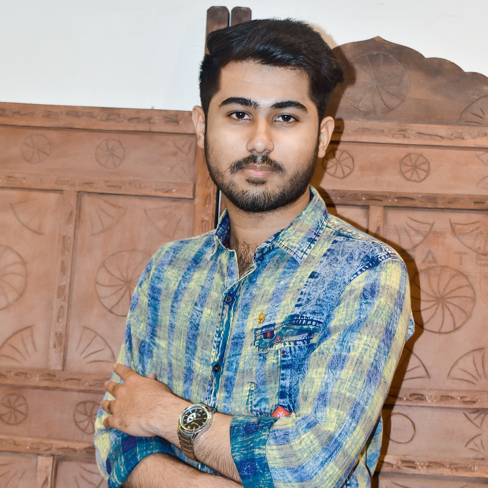

Md Azam
Summary
Pursuing BTech CSE from Amity University Madhya Pradesh , AUMP. Looking for a career opportunity to contribute to the development of an organization through my personal determination, challenge accepting attitude, creative and logical skills while fulfilling the personal objective of my life.
Education
- BTech - CGPA 8.05 (Minor track degree in Artificial Intelligence and machine learning.)
- Class XII : from Sheerwood College Jhansi(CBSE) in the year 2020 with 95%
- Class X : from Sheerwood College Jhansi(CBSE) in the year 2018 with 86%
Work Experience
Chegg
- Designation- Subject Matter Expert
- Duration- 14th February 2022- 15th May 2022. (2 Months)
- Worked as a Subject matter expert in Computer Science
- Responsible for providing academic support to students studying computer science.
Course Hero
- Designation : Tutor.
- Duration : 18th November 2022 to present
- Key responsible Area : Responsible for creating high-quality study materials, such as practice problems, study guides, and video tutorials, that help students understand complex concepts.
Skills
- Project Management
- Web development
- Problem Solving
- Data Analytics
Achievements
- Secured 1st place in MP Police Hackathon (Project-Real-time crime detection).
- Got selected as top 15 and presented our project at Vishleshan Innovative Ideathon Contest VIIC-2022 (Project- Obstacle avoidance and path guiding navigation system for blind people).
My Hobbies
Contact